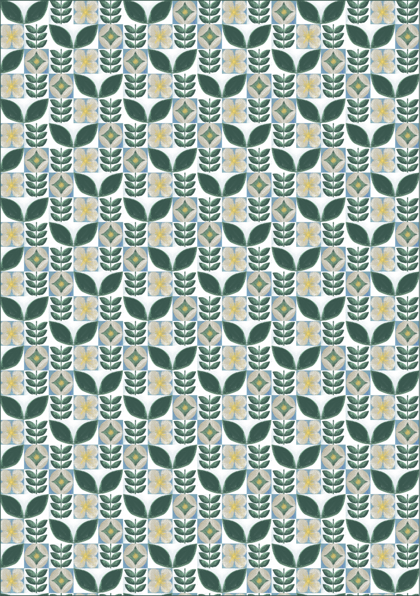

5 PATTERN POSTERS
VD2

Things That Represent Me
내가 좋아하는 'Almond Blossoms', 나비, 여우, 그리고 좌우명으로 반복되는 패턴을 만들었다.
EXHIBITION IDENTITY
VD2
시각소동: 전체적인 형상은 시소(seesaw)를 연상시키는 도형으로 구성했으며, 보는 것은(what we see) 선명한 도형으로, 본 것은(what we saw)흐린 도형으로 나타냈다.
AB시디: 삼각형을 사용해 AB시디를 만들었다.
See Ya: '시야'를 표현하기 위해 'e' 두 개를 눈으로 표현했다.
SELF IDENTITY
VD2
ON THE SQUARE
디자인 스튜디오 'ON THE SQUARE'를 제작했다. 진실됨을 나타내는 숙어 'on the square'를 브랜드 이름으로 내세우고 정사각형을 메타포로 삼아 다양한 타이포그래피와 패턴을 디자인했다.